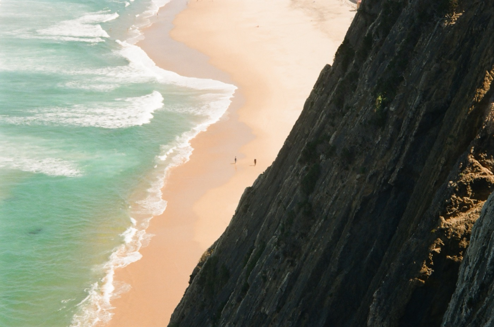
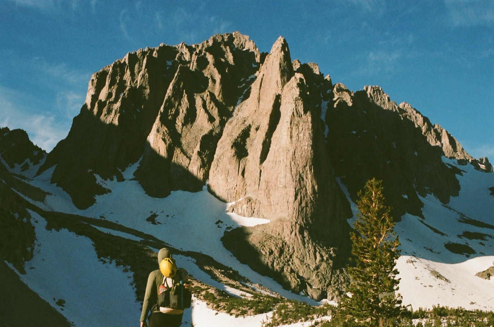
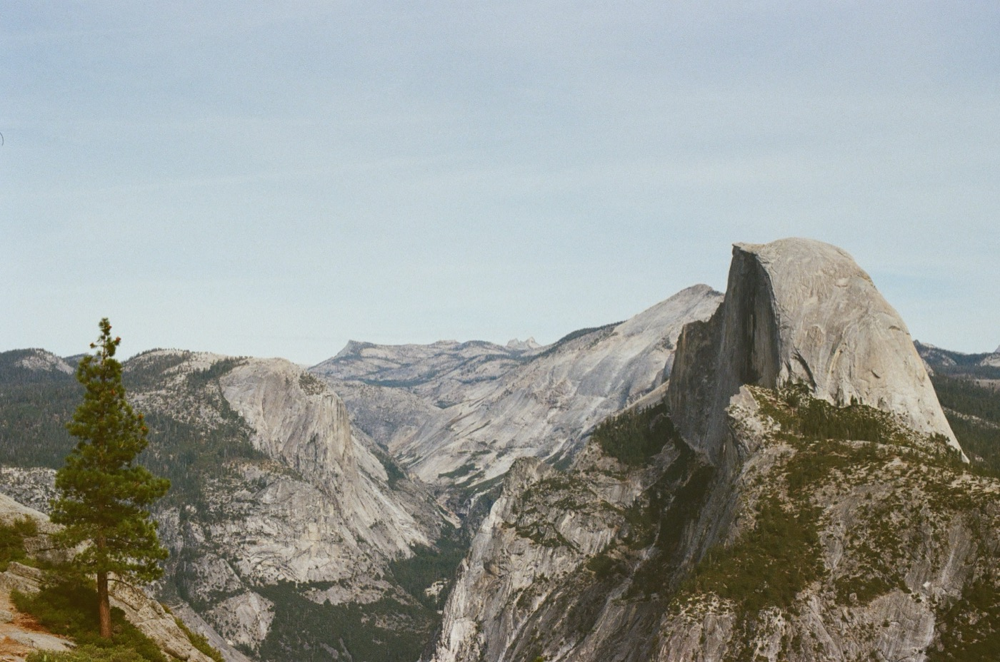
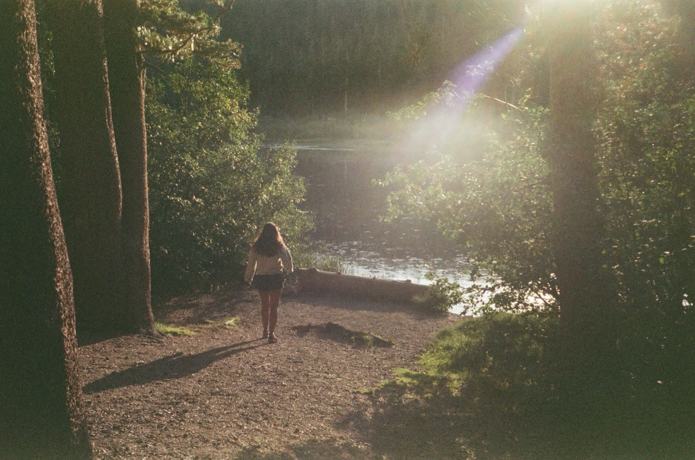
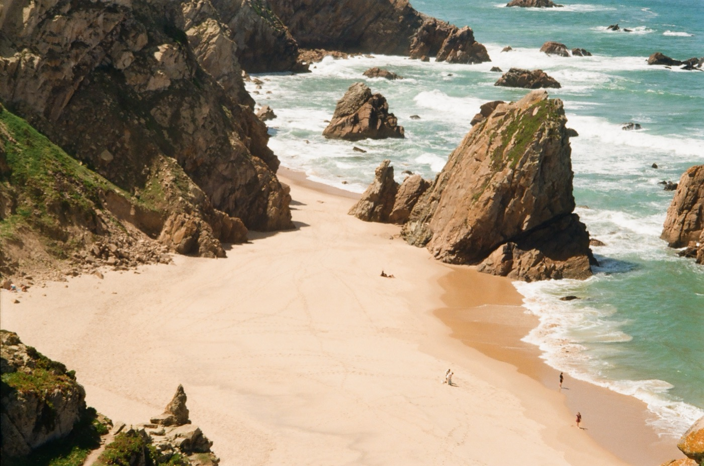
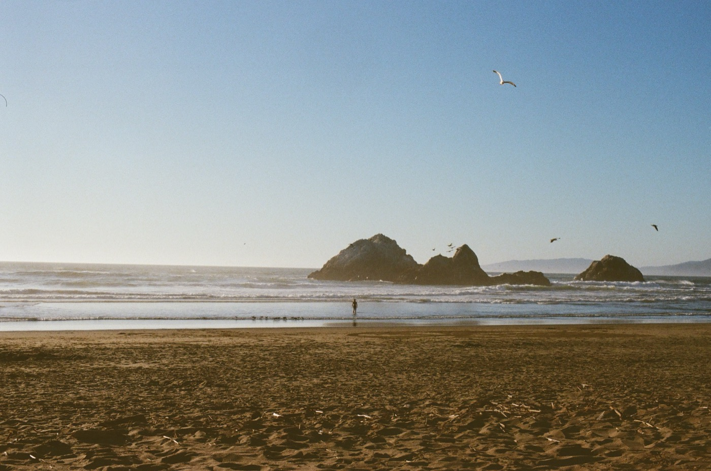
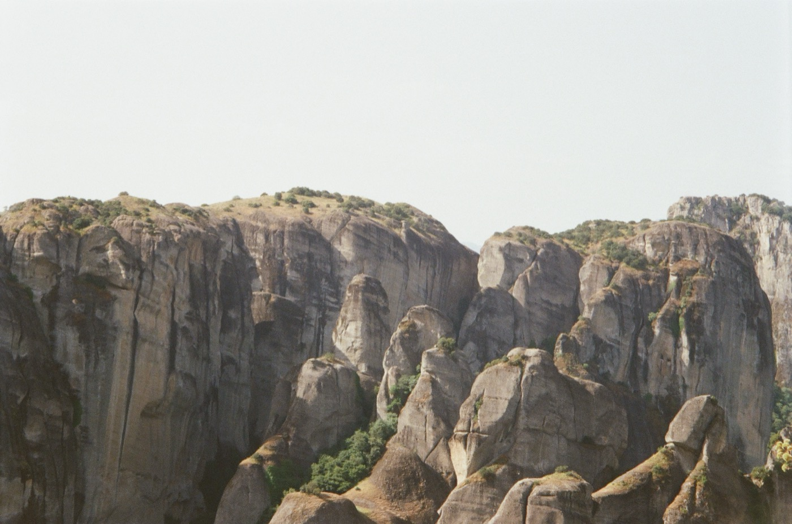

When I'm not at my screen, I'm usually outside. It's what fills my cup and how I most find clarity. I've retired from competitive ultimate frisbee, and had a brief ultra-running career, but these days, I just love spending my time with friends moving through nature.
All these photos were taken while outside on my old 35mm camera.





